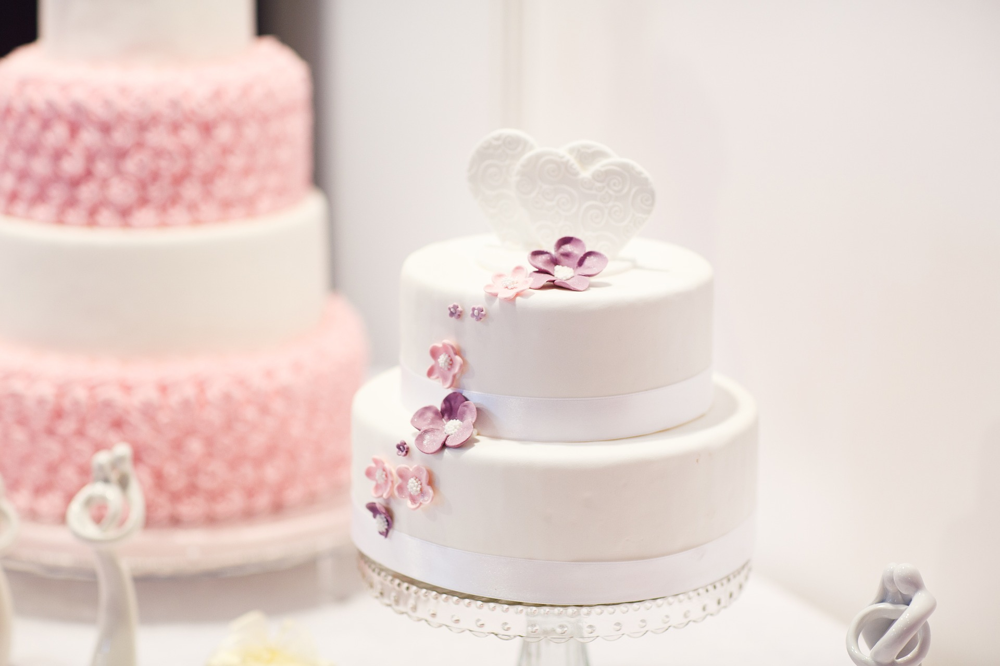

Sokerikakkupohja

Tässä yksinkertainen ohje perinteisen sokerikakkupohjan valmistukseen. Ohjetta voi muokata omaan tarpeeseen munien määrää muuttamalla!
Raaka-aineet (Tästä tulee kakku n. 15-18 hengelle)
- 5 kananmunaa
- sokeria
- vehnäjauhoja
- (kaakaojauhoja)
- perunajauhoja
- (2 tl leivinjauhe)
- rasvaa esim. voi
- korppujauhoja
Valmistus
- Voitele kakkuvuoka hyvin rasvalla ja korppujauhota se. Tähän ohjeeseen kannattaa käyttää 24-26 cm halkaisijaltaan olevaa vuokaa.
- Varmista, että kaikki raaka-aineet ovat huoneenlämpöisiä ennen leivontaa.
- Ota kaksi samankokoista lasia. Riko toiseen kananmunat.
- Mittaa sitten toiseen lasiin saman verran sokeria kuin toisessa on munia.
- Kaada sokeri vaahdotusastiaan ja mittaa samaan lasiin sitten vehnäjauhoja noin 3/4 kananmunien määrästä. Jos haluat tumman kakkupohjan, laita 1/4 osaa vehnäjauhojen määrästä kaakaojauhetta!
- Laita nyt vielä perunajauhoja kunnes yhteismäärä vastaa jälleen munia.
- Lisää halutessasi leivinjauhe. Tämä ei ole välttämätöntä, sillä kakkupohjan pitäisi nousta hyvin kunnon vaahdotuksellakin. Leivinjauheella voit kuitenkin varmistaa hyvän lopputuloksen.
- Vaahdota munat ja sokeri hyväksi vaahdoksi (vaahdon pintaan jää vispilästä jälki).
- Sekoita kuivat aineet hyvin keskenään.
- Siivilöi kuivat aineet taikinaan n. 2-3 osassa ja nostele ne nuolijalla sekaisin. Huom! Tässä vaiheessa kakkupohja menee yleensä pieleen, kun jauhot sekoitetaan liian rankoin ottein ja ilmavuus häviää taikinasta!
- Kaada valmis taikina vuokaan ja paista 175 asteessa n. 40 min. Paistoaika vaihtelee uunista ja taikinan koosta riippuen.
- Kakku on valmis kun se on hieman irronnut reunoista. Voit varmistaa kypsyyden esim. cocktail-tikulla: kakku on kypsä kun tikkuun ei jää taikinaa.
- Kumoa kakku pian uunista ottamisen jälkeen ja anna jäähtyä kunnolla ennen täyttämistä.
Katso vinkkejä esimerkiksi kakkupohjan riittävyyden mitoittamiseen täältä!
